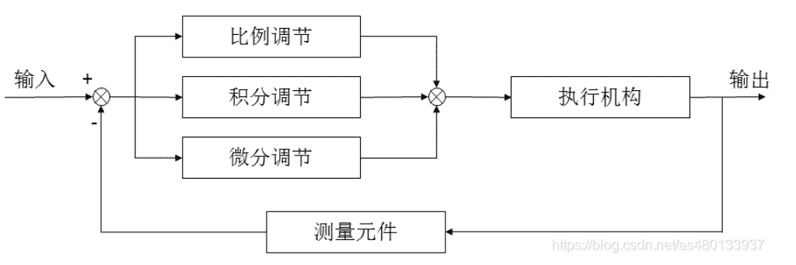
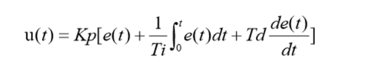
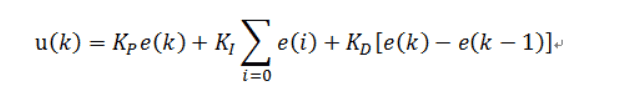
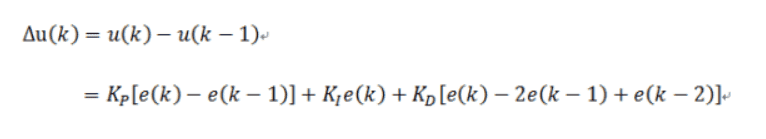

PID
PID算法简介¶
PID 控制器以各种形式使用超过了 1 世纪，广泛应用在机械设备、气动设备 和电子设备.在工业应用中PID及其衍生算法是应用最广泛的算法之一，是当之无愧的万能算法
PID 实指“比例 proportional”、“积分 integral”、“微分 derivative”，这三项构 成 PID 基本要素。每一项完成不同任务，对系统功能产生不同的影响。它的结构简单，参数易 于调整，是控制系统中经常采用的控制算法。
PID：比例单元（P）、积分单元（I）和微分单元（D）组成

PID控制公式：

其中：**u(t)**为控制器输出的控制量；（输出）
**e(t)**为偏差信号，它等于给定量与输出量之差；（输入）
KP 为比例系数；（对应参数 P）
TI 为积分时间常数；（对应参数I）
TD 为微分时间常数。(对应参数 D)
数字 PID 控制算法通常分为位置式 PID 控制算法和增量式 PID 控制算法。
位置式 PID 算法¶

e(k): 用户设定的值（目标值） - 控制对象的当前的状态值
比例P : e(k)
积分I : ∑e(i) 误差的累加
微分D : e(k) - e(k-1) 这次误差-上次误差
也就是位置式PID是当前系统的实际位置，与你想要达到的预期位置的偏差，进行PID控制
因为有误差积分 ∑e(i)，一直累加，也就是当前的输出u(k)与过去的所有状态都有关系，用到了误差的累加值；（误差e会有误差累加），输出的u(k)对应的是执行机构的实际位置，，一旦控制输出出错(控制对象的当前的状态值出现问题 )，u(k)的大幅变化会引起系统的大幅变化
并且位置式PID在积分项达到饱和时,误差仍然会在积分作用下继续累积，一旦误差开始反向变化，系统需要一定时间从饱和区退出，所以在u(k)达到最大和最小时，要停止积分作用，并且要有积分限幅和输出限幅
所以在使用位置式PID时，一般我们直接使用PD控制
而位置式 PID 适用于执行机构不带积分部件的对象，如舵机和平衡小车的直立和温控系统的控制
增量式PID算法¶

比例P : e(k)-e(k-1) 这次误差-上次误差
积分I : e(i) 误差
微分D : e(k) - 2e(k-1)+e(k-2) 这次误差-2*上次误差+上上次误差
增量式PID根据公式可以很好地看出，一旦确定了 KP、TI 、TD，只要使用前后三次测量值的偏差， 即可由公式求出控制增量
而得出的控制量▲u(k)对应的是近几次位置误差的增量，而不是对应与实际位置的偏差 没有误差累加
也就是说，增量式PID中不需要累加。控制增量Δu(k)的确定仅与最近3次的采样值有关，容易通过加权处理获得比较好的控制效果，并且在系统发生问题时，增量式不会严重影响系统的工作
直流电机PID闭环¶
测试使用的电机的减速比为30，自带霍尔编码器的精度为13，AB相组合得到4倍频 => 电机转一圈编码器读数为\(\(30*13*4=1560\)\)。若每10ms读一次编码器则 \(\(编码器的速度 = 编码器读数/0.01s/1560(r/s)\)\)
由于电机本身的误差，可以添加误差系数。
STM32代码环境介绍¶
需求和目标：¶
- 创建Timer.c文件，用TIM3形成10ms（即100HZ）的定时中断，用于后续每10ms读取电机编码器的计数值。
- 创建Encoder.c文件，分别用TIM2和TIM4控制左右两个电机的编码器读数。
- 创建TB6612.c文件，高级定时器TIM1用来输出电机控制的PWM信号，以及电机的正反转。
- 创建PID.c文件，编写PID控制算法函数。
Timer.c文件¶
#include "stm32f10x.h" // Device header
/**
* 函 数：定时中断初始化
* 参 数：无
* 返 回 值：无
*/
void Timer_Init(void)
{
/*开启时钟*/
RCC_APB1PeriphClockCmd(RCC_APB1Periph_TIM3, ENABLE); //开启TIM2的时钟
/*配置时钟源*/
TIM_InternalClockConfig(TIM3); //选择TIM2为内部时钟，若不调用此函数，TIM默认也为内部时钟
/*时基单元初始化*/
TIM_TimeBaseInitTypeDef TIM_TimeBaseInitStructure; //定义结构体变量
TIM_TimeBaseInitStructure.TIM_ClockDivision = TIM_CKD_DIV1; //时钟分频，选择不分频，此参数用于配置滤波器时钟，不影响时基单元功能
TIM_TimeBaseInitStructure.TIM_CounterMode = TIM_CounterMode_Up; //计数器模式，选择向上计数
TIM_TimeBaseInitStructure.TIM_Period = 10000 - 1; //计数周期，即ARR的值
TIM_TimeBaseInitStructure.TIM_Prescaler = 72 - 1; //预分频器，即PSC的值
TIM_TimeBaseInitStructure.TIM_RepetitionCounter = 0; //重复计数器，高级定时器才会用到
TIM_TimeBaseInit(TIM3, &TIM_TimeBaseInitStructure); //将结构体变量交给TIM_TimeBaseInit，配置TIM2的时基单元
/*中断输出配置*/
TIM_ClearFlag(TIM3, TIM_FLAG_Update); //清除定时器更新标志位
//TIM_TimeBaseInit函数末尾，手动产生了更新事件
//若不清除此标志位，则开启中断后，会立刻进入一次中断
//如果不介意此问题，则不清除此标志位也可
TIM_ITConfig(TIM3, TIM_IT_Update, ENABLE); //开启TIM2的更新中断
/*NVIC中断分组*/
NVIC_PriorityGroupConfig(NVIC_PriorityGroup_2); //配置NVIC为分组2
//即抢占优先级范围：0~3，响应优先级范围：0~3
//此分组配置在整个工程中仅需调用一次
//若有多个中断，可以把此代码放在main函数内，while循环之前
//若调用多次配置分组的代码，则后执行的配置会覆盖先执行的配置
/*NVIC配置*/
NVIC_InitTypeDef NVIC_InitStructure; //定义结构体变量
NVIC_InitStructure.NVIC_IRQChannel = TIM3_IRQn; //选择配置NVIC的TIM2线
NVIC_InitStructure.NVIC_IRQChannelCmd = ENABLE; //指定NVIC线路使能
NVIC_InitStructure.NVIC_IRQChannelPreemptionPriority = 2; //指定NVIC线路的抢占优先级为2
NVIC_InitStructure.NVIC_IRQChannelSubPriority = 1; //指定NVIC线路的响应优先级为1
NVIC_Init(&NVIC_InitStructure); //将结构体变量交给NVIC_Init，配置NVIC外设
/*TIM使能*/
TIM_Cmd(TIM3, ENABLE); //使能TIM2，定时器开始运行
}
/* 定时器中断函数，可以复制到使用它的地方
void TIM3_IRQHandler(void)
{
if (TIM_GetITStatus(TIM3, TIM_IT_Update) == SET)
{
TIM_ClearITPendingBit(TIM3, TIM_IT_Update);
}
}
*/
TB6612.c文件¶
#include "stm32f10x.h" // Device header
#include "TB6612.h"
void TB6612_Init(void)
{
RCC_APB2PeriphClockCmd(RCC_APB2Periph_GPIOA|RCC_APB2Periph_GPIOB, ENABLE);
//电机PWM引脚(PA8,PB11)
GPIO_InitTypeDef GPIO_InitStructure;
GPIO_InitStructure.GPIO_Mode = GPIO_Mode_AF_PP;
GPIO_InitStructure.GPIO_Pin = GPIO_Pin_8|GPIO_Pin_11;
GPIO_InitStructure.GPIO_Speed = GPIO_Speed_50MHz;
GPIO_Init(GPIOA, &GPIO_InitStructure);
//电机正负极引脚(PB12,PB13,PB14,PB15 )
GPIO_InitStructure.GPIO_Mode = GPIO_Mode_Out_PP;
GPIO_InitStructure.GPIO_Pin = GPIO_Pin_12|GPIO_Pin_13|GPIO_Pin_14|GPIO_Pin_15;
GPIO_InitStructure.GPIO_Speed = GPIO_Speed_50MHz;
GPIO_Init(GPIOB, &GPIO_InitStructure);
}
void TB6612_PWM_Init(void)
{
RCC_APB2PeriphClockCmd(RCC_APB2Periph_TIM1, ENABLE);
TIM_TimeBaseInitTypeDef TIM_TimeBaseInitStructure;
TIM_TimeBaseInitStructure.TIM_Period= 100;
TIM_TimeBaseInitStructure.TIM_Prescaler = 7200-1;
TIM_TimeBaseInitStructure.TIM_CounterMode = TIM_CounterMode_Up;
TIM_TimeBaseInitStructure.TIM_ClockDivision = TIM_CKD_DIV1;
TIM_TimeBaseInitStructure.TIM_RepetitionCounter = 0;
TIM_InternalClockConfig(TIM1);
TIM_TimeBaseInit(TIM1, &TIM_TimeBaseInitStructure);
TIM_OCInitTypeDef TIM_OCInitStructure;
TIM_OCStructInit(&TIM_OCInitStructure);
TIM_OCInitStructure.TIM_OCMode = TIM_OCMode_PWM1;
TIM_OCInitStructure.TIM_Pulse = 0;
TIM_OCInitStructure.TIM_OCPolarity = TIM_OCPolarity_High;
TIM_OCInitStructure.TIM_OutputState = TIM_OutputState_Enable;
TIM_OC1Init(TIM1, &TIM_OCInitStructure);
TIM_OC4Init(TIM1, &TIM_OCInitStructure);
TIM_Cmd(TIM1, ENABLE);
//设置TIMx的PWM主输出为使能，高级定时器不使用从模式的话都要加这一句；
TIM_CtrlPWMOutputs(TIM1,ENABLE);
}
void Motor_SetSpeed(int8_t SpeedL, int8_t SpeedR)
{
if(SpeedL>=0)
{
TIM_SetCompare1(TIM1, SpeedL);
Motor_StartL(1);
}
else
{
TIM_SetCompare1(TIM1, -SpeedL);
Motor_StartL(0);
}
if(SpeedR>=0)
{
TIM_SetCompare4(TIM1, SpeedR);
Motor_StartR(1);
}
else
{
TIM_SetCompare4(TIM1, -SpeedR);
Motor_StartR(0);
}
}
void MotorEnable(uint8_t State)
{
GPIO_WriteBit(GPIOA, GPIO_Pin_11, (BitAction)State);
GPIO_WriteBit(GPIOA, GPIO_Pin_8, (BitAction)State);
}
void Motor_StartL(uint8_t A01)
{
uint8_t A02;
GPIO_WriteBit(GPIOB, GPIO_Pin_14, (BitAction)A01);
A02=A01^0x01;
GPIO_WriteBit(GPIOB, GPIO_Pin_15, (BitAction)A02);
}
void Motor_StartR(uint8_t B01)
{
uint8_t B02;
GPIO_WriteBit(GPIOB, GPIO_Pin_13, (BitAction)B01);
B02=B01^0x01;
GPIO_WriteBit(GPIOB, GPIO_Pin_12, (BitAction)B02);
}
Encoder.c文件¶
#include "stm32f10x.h" // Device header
#include "PID.h"
#include "Encoder.h"
void Encoder_Init(void)
{
/*开启时钟*/
RCC_APB1PeriphClockCmd(RCC_APB1Periph_TIM2, ENABLE); //开启TIM3的时钟
RCC_APB1PeriphClockCmd(RCC_APB1Periph_TIM4, ENABLE);
RCC_APB2PeriphClockCmd(RCC_APB2Periph_GPIOA, ENABLE); //开启GPIOA的时钟
RCC_APB2PeriphClockCmd(RCC_APB2Periph_GPIOB, ENABLE);
/*GPIO初始化*/
GPIO_InitTypeDef GPIO_InitStructure;
GPIO_InitStructure.GPIO_Mode = GPIO_Mode_IPU;
GPIO_InitStructure.GPIO_Pin = GPIO_Pin_0 | GPIO_Pin_1;
GPIO_InitStructure.GPIO_Speed = GPIO_Speed_50MHz;
GPIO_Init(GPIOA, &GPIO_InitStructure); //将PA6和PA7引脚初始化为上拉输入
GPIO_InitStructure.GPIO_Mode = GPIO_Mode_IPU;
GPIO_InitStructure.GPIO_Pin = GPIO_Pin_6 | GPIO_Pin_7;
GPIO_InitStructure.GPIO_Speed = GPIO_Speed_50MHz;
GPIO_Init(GPIOB, &GPIO_InitStructure);
/*时基单元初始化*/
TIM_TimeBaseInitTypeDef TIM_TimeBaseInitStructure; //定义结构体变量
TIM_TimeBaseInitStructure.TIM_ClockDivision = TIM_CKD_DIV1; //时钟分频，选择不分频，此参数用于配置滤波器时钟，不影响时基单元功能
TIM_TimeBaseInitStructure.TIM_CounterMode = TIM_CounterMode_Up; //计数器模式，选择向上计数
TIM_TimeBaseInitStructure.TIM_Period = 65536 - 1; //计数周期，即ARR的值
TIM_TimeBaseInitStructure.TIM_Prescaler = 1 - 1; //预分频器，即PSC的值
TIM_TimeBaseInitStructure.TIM_RepetitionCounter = 0; //重复计数器，高级定时器才会用到
TIM_TimeBaseInit(TIM2, &TIM_TimeBaseInitStructure); //将结构体变量交给TIM_TimeBaseInit，配置TIM3的时基单元
TIM_TimeBaseInitStructure.TIM_ClockDivision = TIM_CKD_DIV1; //时钟分频，选择不分频，此参数用于配置滤波器时钟，不影响时基单元功能
TIM_TimeBaseInitStructure.TIM_CounterMode = TIM_CounterMode_Up; //计数器模式，选择向上计数
TIM_TimeBaseInitStructure.TIM_Period = 65536 - 1; //计数周期，即ARR的值
TIM_TimeBaseInitStructure.TIM_Prescaler = 1 - 1; //预分频器，即PSC的值
TIM_TimeBaseInitStructure.TIM_RepetitionCounter = 0; //重复计数器，高级定时器才会用到
TIM_TimeBaseInit(TIM4, &TIM_TimeBaseInitStructure); //将结构体变量交给TIM_TimeBaseInit，配置TIM3的时基单元
/*输入捕获初始化*/
TIM_ICInitTypeDef TIM_ICInitStructure; //定义结构体变量
TIM_ICStructInit(&TIM_ICInitStructure); //结构体初始化，若结构体没有完整赋值
//则最好执行此函数，给结构体所有成员都赋一个默认值
//避免结构体初值不确定的问题
TIM_ICInitStructure.TIM_Channel = TIM_Channel_1; //选择配置定时器通道1
TIM_ICInitStructure.TIM_ICFilter = 0xF; //输入滤波器参数，可以过滤信号抖动
TIM_ICInit(TIM2, &TIM_ICInitStructure); //将结构体变量交给TIM_ICInit，配置TIM3的输入捕获通道
TIM_ICInitStructure.TIM_Channel = TIM_Channel_2; //选择配置定时器通道2
TIM_ICInitStructure.TIM_ICFilter = 0xF; //输入滤波器参数，可以过滤信号抖动
TIM_ICInit(TIM2, &TIM_ICInitStructure); //将结构体变量交给TIM_ICInit，配置TIM3的输入捕获通道
TIM_ICStructInit(&TIM_ICInitStructure); //结构体初始化，若结构体没有完整赋值
//则最好执行此函数，给结构体所有成员都赋一个默认值
//避免结构体初值不确定的问题
TIM_ICInitStructure.TIM_Channel = TIM_Channel_1; //选择配置定时器通道1
TIM_ICInitStructure.TIM_ICFilter = 0xF; //输入滤波器参数，可以过滤信号抖动
TIM_ICInit(TIM4, &TIM_ICInitStructure); //将结构体变量交给TIM_ICInit，配置TIM3的输入捕获通道
TIM_ICInitStructure.TIM_Channel = TIM_Channel_2; //选择配置定时器通道2
TIM_ICInitStructure.TIM_ICFilter = 0xF; //输入滤波器参数，可以过滤信号抖动
TIM_ICInit(TIM4, &TIM_ICInitStructure);
/*编码器接口配置*/
TIM_EncoderInterfaceConfig(TIM2, TIM_EncoderMode_TI12, TIM_ICPolarity_Rising, TIM_ICPolarity_Rising);
TIM_Cmd(TIM2, ENABLE); //使能TIM2，定时器开始运行
TIM_EncoderInterfaceConfig(TIM4, TIM_EncoderMode_TI12, TIM_ICPolarity_Falling, TIM_ICPolarity_Rising);
/*TIM使能*/
TIM_Cmd(TIM4, ENABLE);
}
int16_t Encoder_Get(void)
{
int16_t Temp;
Temp = TIM_GetCounter(TIM2);
TIM_SetCounter(TIM2, 0);
return Temp;
}
int16_t Encoder_Get_(void)
{
int16_t Temp1;
Temp1 = TIM_GetCounter(TIM4);
TIM_SetCounter(TIM4, 0);
return Temp1;
}
int16_t Speed1,Speed2;
int Position1,Position2;
int16_t PWM_P1, PWM_V1, PWM_P2, PWM_V2;
int16_t PWM_OUT1,PWM_OUT2;
void TIM3_IRQHandler(void)
{
if (TIM_GetITStatus(TIM3, TIM_IT_Update) == SET)
{
Speed1 = Encoder_Get();
Speed2 = Encoder_Get_();
Position1 += Speed1;
Position2 += Speed2;
// //位置闭环
// PWM_P1 = Position_FeedbackControl(&PID_MotorPosition, Position1);
// PWM_P2 = Position_FeedbackControl(&PID_MotorPosition, Position2);
// //限幅PWM
// PWM_P1 = Velocity_Restrict(PWM_P1, &PID_MotorVelocity);
// PWM_P2 = Velocity_Restrict(PWM_P2, &PID_MotorVelocity);
// /*
// 位置环输出的 PWM 值按一定比例转换为速度值，接下来使用该速度值进行速度闭环控制。
// 空载时， 电源适配器供电情况下，每76PWM 约等于 1 编码器速度
// */
// PWM_V1 = PWM_P1/76;
// PWM_V2 = PWM_P2/76;
// //速度闭环
// PID_MotorVelocity.target_val=PWM_V1;
// PWM_OUT1 = Velocity_FeedbackControl(&PID_MotorVelocity, Speed1);
// PID_MotorVelocity.target_val=PWM_V2;
// PWM_OUT2 = Velocity_FeedbackControl(&PID_MotorVelocity, Speed2);
TIM_ClearITPendingBit(TIM3, TIM_IT_Update);
}
}
PID.c文件¶
#include "stm32f10x.h"
#include "PID.h"
tPid PID_MotorVelocity;
tPid PID_MotorPosition;
void PID_MotorVelocity_Init(float speed)
{
//0~80稳定
PID_MotorVelocity.target_val = speed;
PID_MotorVelocity.actual_val = 0;
PID_MotorVelocity.err = 0;
PID_MotorVelocity.last_err = 0;
PID_MotorVelocity.sum_err = 0;
PID_MotorVelocity.Kp = 8.2;
PID_MotorVelocity.Ki = 0.15;
PID_MotorVelocity.Kd = 1.2;
PID_MotorVelocity.control_val =0 ;
}
void PID_MotorPosition_Init(float circle)
{
//0~80稳定
PID_MotorPosition.target_val = circle*1560;
PID_MotorPosition.actual_val = 0;
PID_MotorPosition.err = 0;
PID_MotorPosition.last_err = 0;
PID_MotorPosition.sum_err = 0;
PID_MotorPosition.Kp = 3.8;
PID_MotorPosition.Ki = 0;
PID_MotorPosition.Kd = 0;
PID_MotorPosition.control_val =0 ;
}
//速度闭环
int16_t Velocity_FeedbackControl(tPid *pid, int16_t actual_val)
{
pid->actual_val = actual_val;
pid->err = pid->target_val - pid->actual_val;
pid->sum_err+=pid->err;
pid->control_val = pid->Kp*pid->err + pid->Ki*pid->sum_err + pid->Kd*(pid->err-pid->last_err);
pid->last_err = pid->err;
return pid->control_val;
}
//位置闭环
int16_t Position_FeedbackControl(tPid *pid, int16_t actual_val)
{
pid->actual_val = actual_val;
pid->err = pid->target_val - pid->actual_val;
pid->sum_err+=pid->err;
pid->control_val = pid->Kp*pid->err + pid->Ki*pid->sum_err + pid->Kd*(pid->err-pid->last_err);
pid->last_err = pid->err;
return pid->control_val;
}
int16_t Velocity_Restrict(int16_t PWM_P, tPid *pid)
{
if (PWM_P > +pid->target_val*76) PWM_P = +pid->target_val*76;
else if (PWM_P < -pid->target_val*76) PWM_P = -pid->target_val*76;
else PWM_P=PWM_P;
return PWM_P;
}
PID.h中定义该结构体